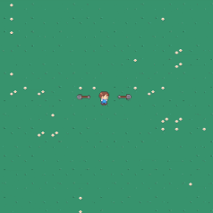
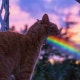

프로젝트
카드를 클릭하면 개발일지를 볼 수 있어요

2024
뱀서라이크
Vampire Survivors 류 로그라이크 게임
자동 공격, 몬스터 웨이브, 경험치·레벨업 시스템을 Unity로 구현한 로그라이크 슈터 게임입니다.

2020
포도씨의 모험
더블점프를 했더니 하드코어가 되었습니다
더블점프 메커니즘을 활용한 하드코어 2D 플랫포머 게임입니다.
2021
Shark Timer Game
박종혁 & 정혜원 공동 제작
상어 캐릭터와 타이머, 물고기 마우스 커서가 특징인 p5.js 브라우저 게임입니다.
2023
Arrow Master
2인용 궁술 대결 게임
바람 방향과 세기에 따라 화살 궤적이 달라지는 2인용 턴제 대전 게임입니다.
2023
더 인기, 더 팔로워
팔로워 수 맞추기 퀴즈 게임
두 인물의 사진을 보고 팔로워 수를 맞추는 퀴즈 게임입니다.

2022
빛이있으라
꿈창작캠퍼스 게임프로그래밍 과정
GameMaker Studio로 9차시에 걸쳐 제작하고 출시까지 완료한 2D 게임입니다.
2024
내 과일을 받아줘
하늘에서 떨어지는 과일을 받아라!
소쿠리로 과일을 받아내는 5단계 구성의 브라우저 게임입니다.